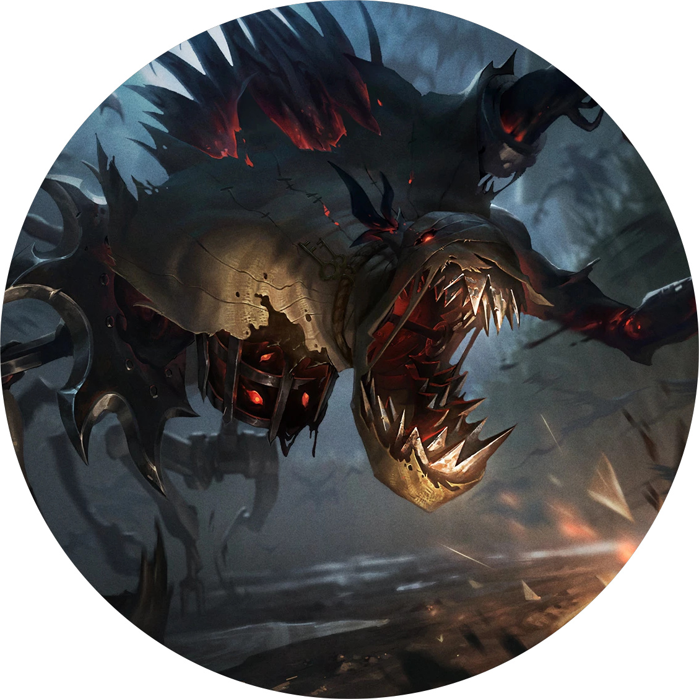

一切都要从老休巴德讲起，变了味的蜜酒把他喝得酩酊大醉，估计又回想起了某场模糊的战斗，八成是他当了逃兵的那一次，于是他就把自己锁在金坡镇郊外的某个茅草房里。戴维尔想把门撞开，他这个邻居可真够意思，但那个可怜的老骨头居然还有把子力气，全身顶住门板，嘴里念念有词地说着什么身高、什么蜘蛛、什么被鸟给啄死。谁信他呀，能啄死他的也就酒瓶子了，所以我们就都回家了，换谁都会觉得，晾他一天，这混球自己就清醒了。
就一宿，全变了。
第一声惨叫，全镇的听得见，就像是谁扒开了休巴德的胸膛，掏出了他一辈子的惨叫。随后是第二声，几乎一模一样——但却更惨烈。声音高得刺耳，就像麻布袋包着锈铁，用像是人的语调，喊叫着像是人的字句，直到面包师的老婆哭喊一声，“法师！”然后就乱套了。人们纷纷拿起武器，镇长——如果这破地方的头头配叫镇长的话——向着集会大厅里一通乱射，家家都不管不顾、手忙脚乱地堵上窗户，老一套。自从冬爪侵袭北方以后，这种事已经发生一百次，没准都两百次了。寻常百姓，只要有点魔法的风吹草动，就吓疯了。
我要说的是，出事的时候大概都这样。但出再大的事也有兜底的，但金坡镇出的事，干脆底掉兜不住。
不信？
你自己去瞅瞅。金坡镇已经没了。
没工夫等你瞅，我就接着讲了，接下来就要对不起戴维尔了。跟你讲，戴维尔以前是个探子，当时咱还觉得弗雷尔卓德绥靖政策有多光彩呢，后来他又继续效忠国王，远走恕瑞玛和蓝焰群岛。是个见过世面的。多亏咱在大西边，咱这穷乡僻壤的，最凶险的不过是孵化季节过后走丢的龙禽，可能再算上个把晒黢黑的土贼，但戴维尔可见过外面的凶险。世界有多险恶，你做梦都想不到。于是他集结了所有愿意听指挥的人，组织了一支民兵团，打算把那些作怪的“法师”就地正法。
他的计划很简单：天一亮，我们就全体出镇巡逻，两两一组，不落单。当过兵的主事，让我们有盼头，让我们觉得能打。为了国王为了国家！哇呀呀德玛西亚那一套。
谁知天亮的时候有一家人全没了。
五口人，一个不剩。农场七零八落，围栏里的牲口全被宰了。门全是从里面反锁的，窗户也都栓上了。他们就那么没了。镇长叫全镇集合开会，两个雇农没来。戴维尔去排房叫他们，有什么玩意应了一声。但并不是他们。声音很像他们，但却让人感觉是硬挤出来的，就像那种破旧上锈的铁笼，嘎吱嘎吱、呛啷呛啷、哗啦哗啦的声音，怎么停也停不下来。
到这个时候，大伙都害怕起来了。有个愣头青拿着把剑就闯到田里——没了。另一个人跟在他后面——没了。铁匠想出了一个好主意，他要快马赶到安珀菲尔，叫卫队过来，可他在那条出镇的老商路上刚跑一半，就被马甩了下去，然后被什么东西拖进了排房里。戴维尔大喊他的名字，问他有没有事，然后那个恐怖的声音又应了，说它要一路赶到安珀菲尔叫卫队过来。
戴维尔又问了一遍，它又说：“我要一路赶到安珀菲尔叫卫队过来。”
那个声音邪乎的很……就像在你脑瓜里拧别针，搅着脑浆，直戳到更底下的黑暗。大伙的脸色全都变了。大人们抱紧孩子，慢慢向后退，有的干脆拔腿就往家跑。那个声音足以扒下一个人的所有防备，只剩下赤裸的魂，即使是烈日当午，也心惊胆寒，瑟瑟发抖。感觉就像被它抽走了什么东西。它渴望的东西。
一个小姑娘说她看见田地里有人站着，就站在我们插稻草人的位置。谁还关心那个呀，而且当时大伙都太慌乱，都没在意她说的话。
我们太傻了。
天色暗下来，镇上半数的房子都门窗紧闭。你能听到人们在里面窃窃私语、喃喃嘟囔、嗤嗤傻笑，像疯子一样，说的是什么……我不确定。蛇。闪电。黑暗。墙壁倒塌。刀刃。大海。他们一边在狂笑，一边在尖叫，听上去每个人都疯了，就像被困在了房间里，和另一个可怕的自己共处。听上去就像每个人都被困在了同一个噩梦中。
然后灯火开始熄灭。一家又一家，门窗都挡的严严实实，但灯火都无力地熄灭了。然后他们的声音也开始消失，人们的突然安静下来，只剩下一个声音。某个东西在老铁匠铺后面沙哑地叫。自言自语。说着什么蛇。闪电。黑暗。
戴维尔，那个可怜的傻蛋，他带着民兵团冲了进去。然后……我也和他一起。我拿着刀。我还提着灯笼。但排房又长又深，灯笼的光在四面八方照出影子。
我不知道究竟发生了什么。我看到了一张脸——应该是脸。有什么东西在和我对视，就在戴维尔前头，但他却似乎看不见它。就好像只有我能看见那张脸。一张彻底歪斜、扭曲的粗麻布脸，嘴里吐着锈铁的尖牙。在它后面……是某种庞然大物。瘦长的腿支撑着铺开的身子，上百只活蹦乱跳的黑鸟在一个旧笼子里扑腾，我认识那个笼子，是我们去年扔进树林里的那个。然后我看到了眼睛。许多许多眼睛。
现在金坡镇已经不剩人了。如果我后面没人出来……那我就是唯一一个活下来的。他们的惨叫声在我背后渐渐静下来，血红的光从苞米穗之间透出来——回荡的都是瘆人的咬牙声、惨叫声、还有猪和马的痛苦嘶嚎……
还有乌鸦！上百只——上千只乌鸦！但它们并不是乌鸦，你还不明白吗？它们是烟雾冥火！它们不是真的！它们不可能是真的……
它们在跟着那个声音！那个深沉、轰鸣的声音一直藏在最下面！你还不明白吗？你还——
噢，神啊……戴维尔！我把他忘了！我把他抛下了——在排房里，在那个可怕的稻草人身边！大伙——他们全死了！神啊，神啊，它一定在跟踪我。只要它尝了你的恐惧，只要它认识了你，它就绝不会松口。它不会放过你，它不会——
哪来的说话声？
你们能——
你们听不见？
……戴维尔？
